Learning Objectives
After completing this lesson, you’ll be able to:
- Describe how FME Flow can automate repetitive tasks.
- Design a workspace with user parameters to give the end-user control over how a workspace runs.
- Set User Parameters.

Learning content in the FME Academy presents a user story that addresses their data integration challenges with FME. You should follow along with their actions using your FME installation (2026.1 or later) or request an on-demand virtual machine. Some lessons will require you to follow their steps or take additional steps to answer a quiz question.
The Resources section will provide links to workspaces and data when necessary.
Instructions
In this lesson, you will:
- Scroll down to read the text below.
- Complete the exercise by following the steps.
- Complete the Quiz toward the bottom of the page.
- Optional: Let us know if you found this lesson relevant to your role by filling out the survey at the bottom of the page.
- Click 'Next' to mark the lesson complete
Resources
Automate Repetitive Data Integration Tasks with FME Flow

Frank is a GIS Administrator working for a local government. He is also the FME Flow Administrator for his organization. Because his town doesn't have an open data portal, he is constantly bombarded with emails from other departments and the public asking for GIS data.
Frank uses FME Flow to let users access the data directly without his help, creating self-serve data delivery. He has to read through the emails, determine which layer people are requesting, and manually send it to them in the format they requested. People most often request layers from the community resources geodatabase, which contains data on street food vendors, parks, community centers, and more. There are only 6 approved output formats, so Frank wants to limit requests to those options. Frank has to design his workspace so it works well for end-users. These end-users might be running the workspace as logged-in users of FME Flow or using a public-facing FME Flow App. The choices he provides need to make sense for these situations.
In this exercise, you will:
- Explore a workspace designed to read feature classes from an Esri geodatabase and write them to various formats.
- Restrict the output formats available to end-users by editing the default generic parameter and creating a custom Choice user parameter.
- Import a specific list of writer formats into your parameter to prevent user error and simplify the selection process.
- Create a User Parameter for Feature Types to Read to allow users to choose exactly which layers they want to download.
1) Open Starting Workspace
- Start FME Workbench (2026.1 or later).
- Open your starting workspace: C:\FMEData\Workspaces\IntegrateDataWithTheFMEPlatform\create-self-serve.fmw
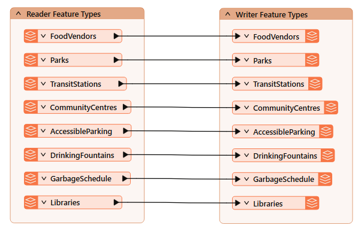
2) Examine the Writer Parameters
- In the Navigator, expand the Training [Generic] writer, then expand Parameters, and find the Output Format parameter.
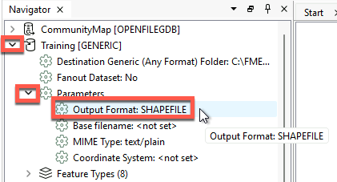
- Double-click the Output Format parameter. Confirm it is currently set to “Esri Shapefile.”
- Note that you can set the output format to any format--even if it would be an invalid output format like JPEG.
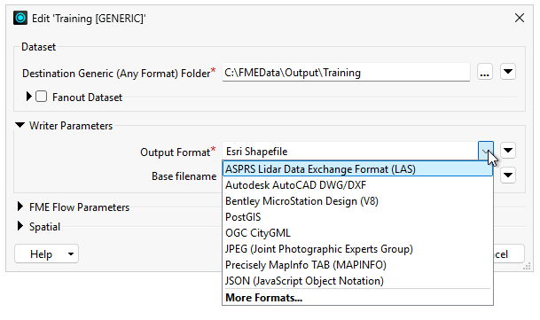
3) Create a User Parameter to Limit Options
To restrict the writer format options, we'll create a user parameter. User parameters give users control over how a workspace runs. You can use user parameters when running workspaces locally, but it is critical to use them when creating workspaces for FME Flow, which are likely to be run by other people.
- Find User Parameters in the Navigator.
- In the Navigator, right click on User Parameters, and select Manage User Parameters.
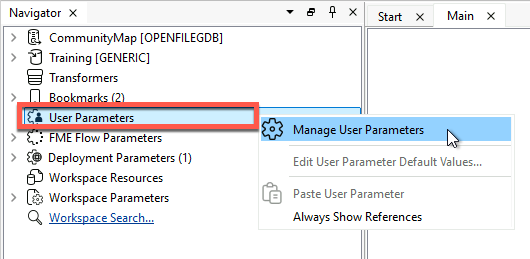
- Click the green ➕, and select Choice.
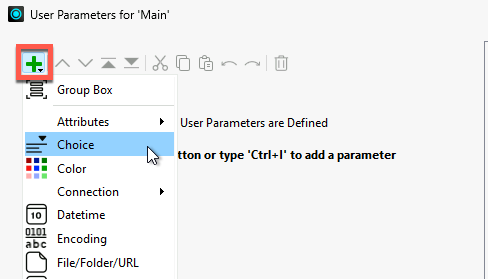
- On the right-hand side, fill out the dialog with the following parameter properties:
| Parameter Identifier |
OutputFormat |
| Label |
Enter an output format |
| Required |
Enabled |
| Show Label |
Enabled |
| Choice Configuration |
Dropdown |
The dialog now looks like this:
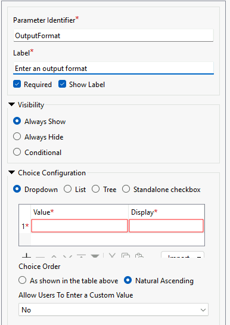
- Click Import > Writer Formats.
- Note: You may not see the Import button at first. If so, expand the entire User Parameter Manager dialog window to make it larger until the Import button appears.
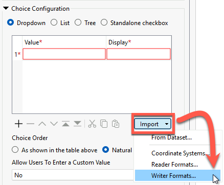
- In the Select Writer Formats dialog, use the Search bar to search for the following six formats. Click the check to add them to the list.
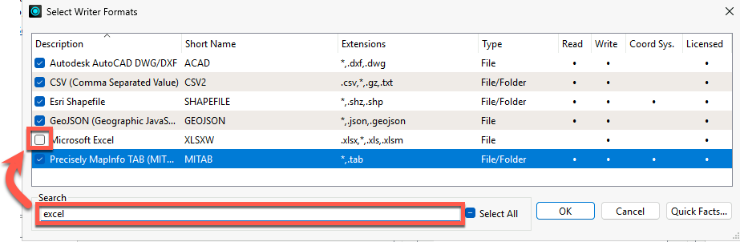
- Click OK, and the selected formats appear in the Choice Configuration table:
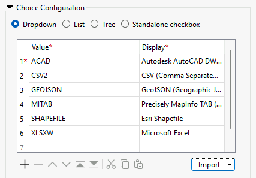
- Select Esri Shapefile as the default value.
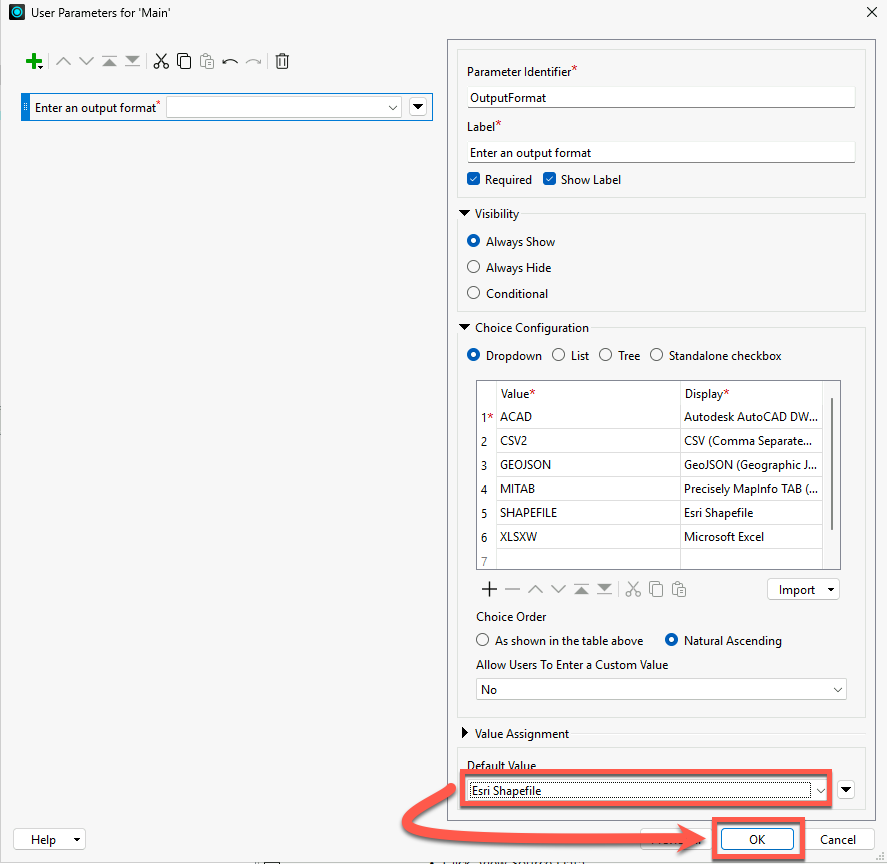
- Click OK to finish editing the User Parameter.
4) Apply the User Parameter to the Generic Writer Format Parameter
The new User Parameter is not yet connected to anything.
- In the Navigator, expand Training[Generic]>Parameters, right-click on Output Format:, and select Link to a Parameter...
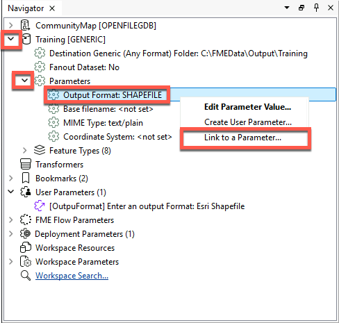
- In the Link to dropdown, select OutputFormat.
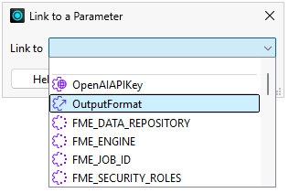
5) Run the Workspace to Confirm the Updated User Parameter Works
- Click Run, and select an output format from the restricted list.
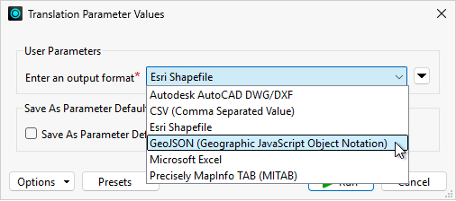
- Click Run to run the workspace.
- In the Navigator, right-click on Training[Generic], and select Open Containing Folder.
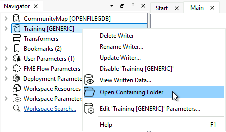
- Confirm the output dataset was created in the format you selected.
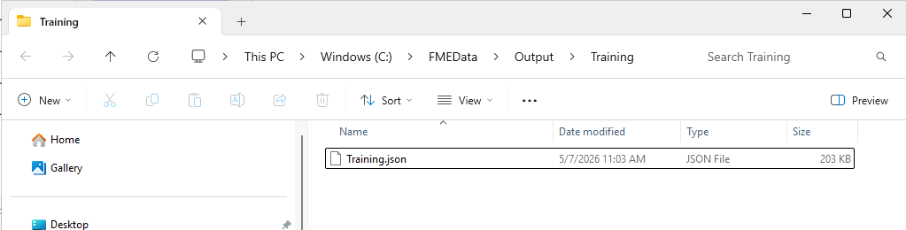
6) Add a User Parameter to Select Feature Types to Read
Now, we'd like to give the user the option to choose which layers they receive when the workspace runs. The most efficient way to do that is to actually restrict the reader to only read certain layers. There is a parameter for that called Feature Types to Read.
- In the Navigator, expand CommunityMap [OPENFILEGDB] > Parameters > Features to Read and right-click on Feature Types to Read.
- Select Create User Parameter.
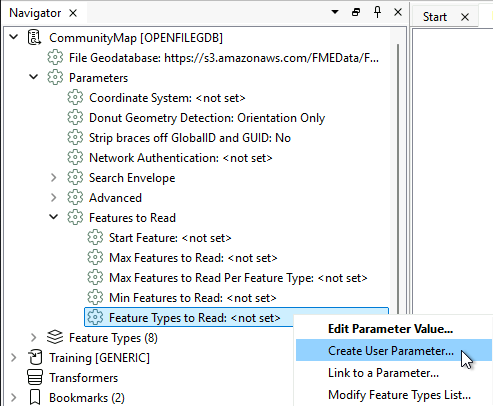
- In the dialog, change the Prompt to "Layers to Read".
- Use a prompt that makes sense to end-users, not just workspace authors.
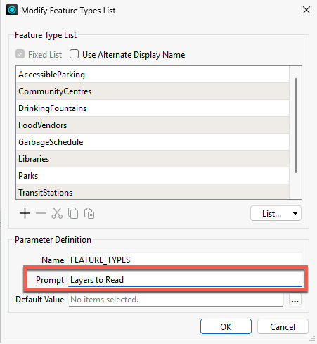
- Click OK.
- Click Rerun Entire Workspace to be prompted to select Layers to Read.
- Select the AccessibleParking and CommunityCentres for Layers to Read, then click Run.
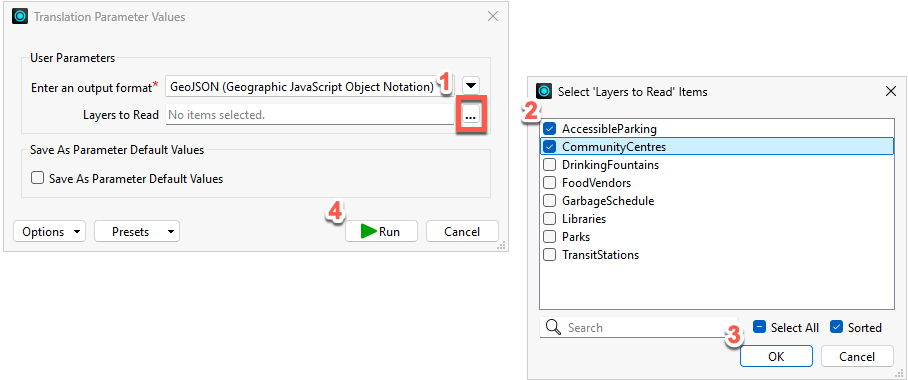
- In the Translation Log, confirm that the correct feature types were written.
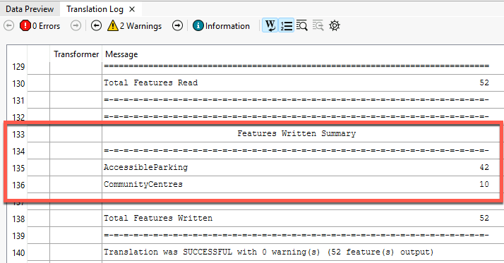
Tips & Tricks
- Be mindful of data caches when testing user parameters. If a reader feature type or transformer has a green data cache, you will not be prompted for any user parameters for that reader, feature type, or transformer unless you use Rerun Entire Workspace.
- FME Flow has five default security roles. You will need at least the fmeauthor role to complete this course. Learn More
- User Parameters give users control over how a workspace runs. You can use User Parameters when running workspaces locally, but it is critical to use them when creating workspaces for FME Flow, which are likely to be run by other people.
- Since the workspace uses a Generic writer, users can choose any format. This unlimited choice can lead to problems:
- Users may become overwhelmed with options.
- Users may choose a nonsensical format, e.g., trying to write text data to an image/raster format like JPEG, which can create errors that cause the workspace to fail.
- User Parameters can be "shown" or "hidden", depending on the Visibility setting.
- Shown parameters are shown to the user when they run the workspace.
- Hidden parameters are used for setting a value once and using it in many places in a workspace. These are not shown to other users.
Leave Us Feedback on This Lesson